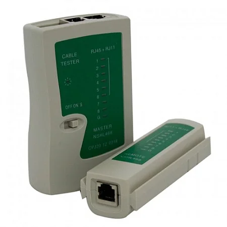

Testador de Cabos (Lan Tester)
O testador de cabos, também conhecido como Lan Tester, é uma ferramenta indispensável para profissionais e entusiastas que trabalham com instalação e manutenção de redes de computadores. Ele permite verificar a integridade e a correta crimpagem de cabos de rede, como os cabos Ethernet (RJ45) e, em alguns modelos, também cabos telefônicos (RJ11/RJ12).

Para que serve?
A principal função de um testador de cabos é diagnosticar problemas em conexões de rede, garantindo que os cabos estejam funcionando corretamente. Ele é utilizado para:
-
Verificar a continuidade dos fios: Confirma se todos os fios dentro do cabo estão conectados de ponta a ponta.
-
Identificar fios abertos ou quebrados: Detecta interrupções na fiação que impediriam o fluxo de dados.
-
Detectar curtos-circuitos: Informa se há contato indesejado entre dois ou mais fios.
-
Identificar fios cruzados (crossover): Verifica se a sequência dos fios está correta de acordo com os padrões T568A ou T568B, ou se há um cruzamento intencional (cabo crossover) ou acidental.
-
Confirmar a sequência de pinagem: Mostra a ordem em que os sinais estão sendo transmitidos através de cada pino, essencial para a correta comunicação da rede.
-
Testar cabos recém-crimpados: É crucial após a crimpagem de um cabo para garantir que o trabalho foi feito corretamente antes de implantá-lo na rede.
Como usar? (Guia Geral)
A maioria dos testadores de cabos é composta por duas unidades: uma principal e uma remota. Os passos gerais para usar um Lan Tester são:
-
Conecte o cabo: Conecte uma extremidade do cabo de rede (RJ45) na porta correspondente da unidade principal do testador e a outra extremidade na porta da unidade remota. Para cabos telefônicos (RJ11/RJ12), use as portas adequadas.
-
Ligue o testador: Acione o botão de ligar do testador.
-
Observe os LEDs: O testador começará a enviar pulsos elétricos através de cada fio do cabo. LEDs numerados (geralmente de 1 a 8 para RJ45, e menos para RJ11/RJ12) acenderão sequencialmente nas duas unidades.
-
Interprete os resultados:
- Sequência correta: Os LEDs acendem na mesma ordem em ambas as unidades (ex: 1-2-3-4-5-6-7-8).
- Fio aberto/quebrado: Um LED correspondente a um fio específico não acende em uma das unidades.
- Curto-circuito: Mais de um LED acende simultaneamente ou de forma irregular.
- Fios cruzados: Os LEDs acendem em uma ordem diferente entre as duas unidades, indicando uma pinagem invertida.
-
Desligue o testador: Após a verificação, desligue o aparelho para economizar bateria.
Modelos avançados: Alguns testadores mais sofisticados podem incluir funcionalidades como medição de comprimento do cabo, detecção de PoE (Power over Ethernet) e identificação de portas.
Onde comprar?
Testadores de cabos podem ser encontrados em lojas de eletrônicos, informática, materiais elétricos e grandes varejistas online. Algumas opções incluem:
- Lojas de informática e redes
- Lojas de materiais elétricos
- Grandes varejistas online (Amazon, Mercado Livre, etc.)
- Lojas especializadas em ferramentas para telecomunicações
Marcas conhecidas por seus testadores de cabos incluem Hikari, Fluke Networks, Exbom, Trendnet e outras, oferecendo uma variedade de modelos para diferentes necessidades e orçamentos.